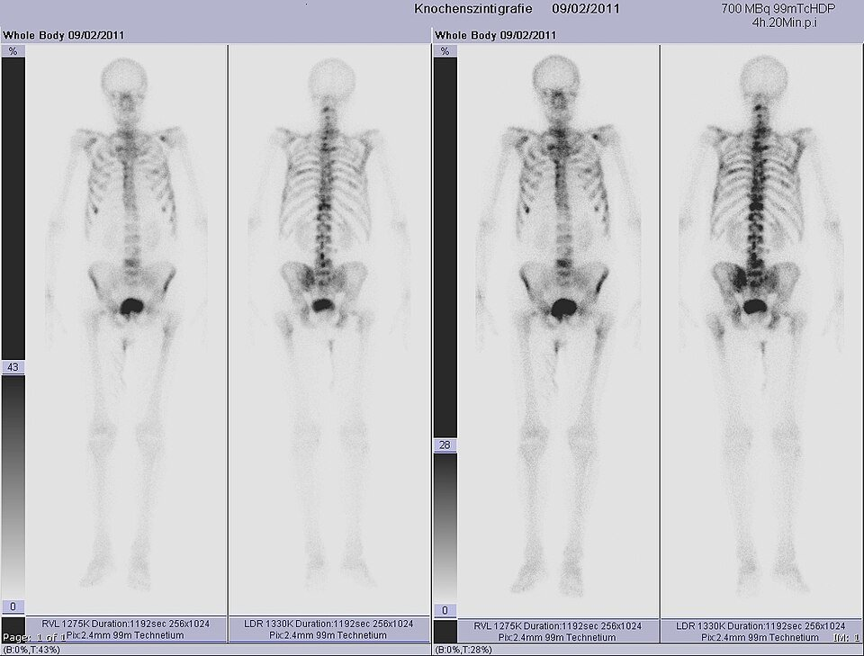
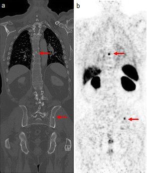
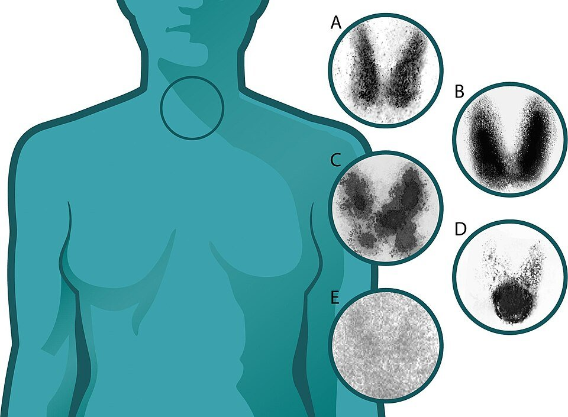
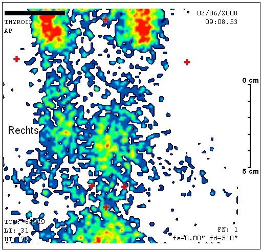
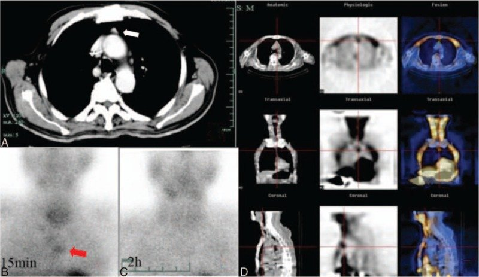
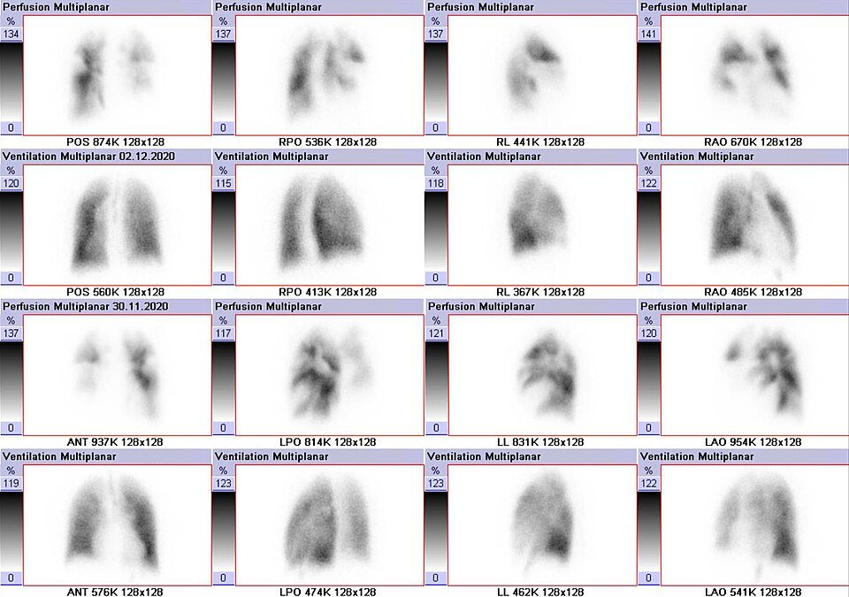
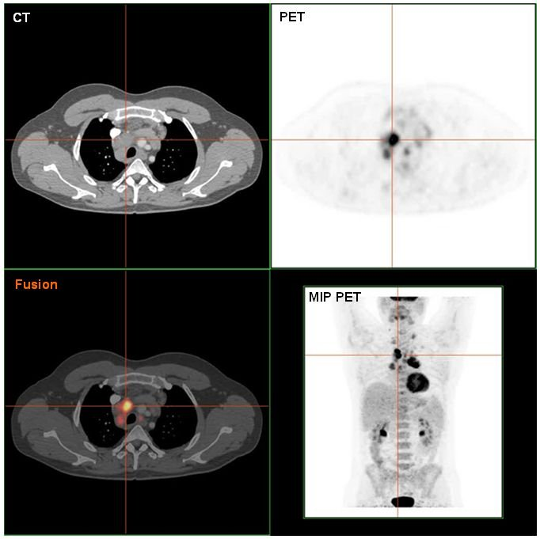
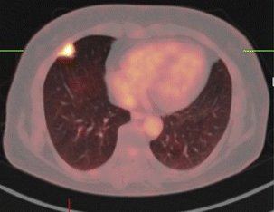
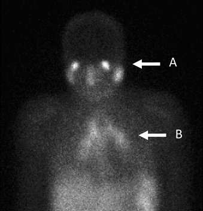
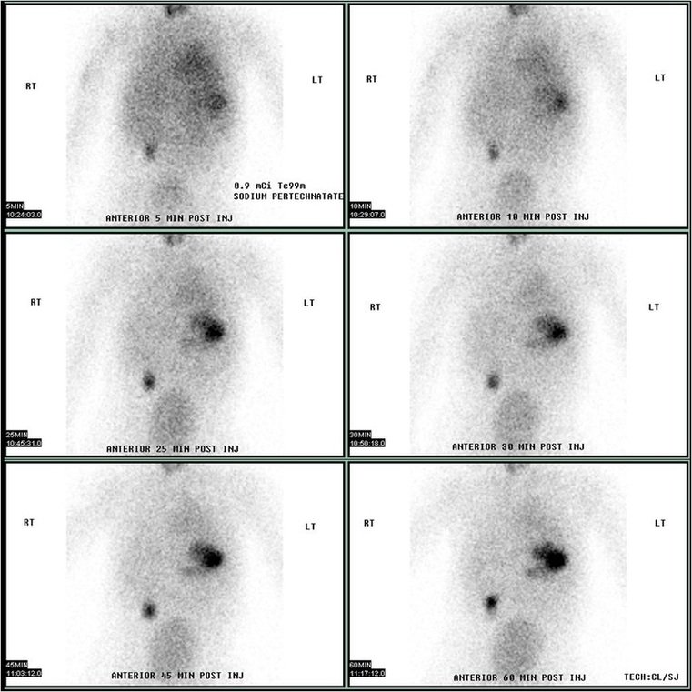

Nuclear Medicine Quiz: Practise Reading Real Scans
Ten real nuclear medicine scans to read: bone scans, PET, thyroid, lungs and a toddler’s tummy. Read the short story, look at the scan, pick a diagnosis, and the answer explains what you should have spotted.
Question 1 of 10 · Bone and cancer
A 74-year-old man with a PSA of 180 has new back and rib pain.
What does this whole-body bone scan show?

Image: Drahreg01 · CC BY-SA 3.0 · Wikimedia Commons. - Multiple bone metastases
- Paget’s disease of bone
- Osteoarthritis only
- Normal bone scan
Show answer
Answer: Multiple bone metastases. Many dark, patchy hot spots are scattered through the spine, pelvis, ribs and breastbone. Random spots in the axial skeleton in a man with a very high PSA mean prostate cancer has spread to bone. Tip: Hot spots = bone turnover, not cancer alone. Arthritis lights up joints symmetrically, and Paget’s lights up a whole bone. Scattered spots in the spine and ribs suggest metastases. Image source: Knochenszintigramm multiple Filiae by Drahreg01.
Question 2 of 10 · Bone and cancer
A 78-year-old man has just been diagnosed with prostate cancer (Gleason 7, PSA 34). This scan is done for staging.
What does this PSMA PET/CT show (arrows)?

Image: Rauscher I, Maurer T, Fendler WP, et al. · CC BY 4.0 · Wikimedia Commons. - Lymphoma
- Osteoporotic fractures
- Prostate cancer spread to bone
- Normal kidney and liver uptake only
Show answer
Answer: Prostate cancer spread to bone. Spots of tracer in the left iliac bone and the thoracic spine match dense (sclerotic) areas on the CT: the prostate cancer has spread to bone. The bright kidneys, and the liver and spleen, are normal places for PSMA tracer to collect. Tip: PSMA PET finds prostate cancer spread far earlier than a CT or bone scan. It has largely replaced them for staging higher-risk disease and for a rising PSA after treatment. Image source: Gallium PSMA PET scan by Rauscher I, Maurer T, Fendler WP, et al..
Question 3 of 10 · Endocrine
A 61-year-old has a low TSH, a high T4 and a lump in the neck.
These are five thyroid scans (A to E). Which diagnosis fits scan D?

Image: Petros Perros · CC BY-SA 3.0 · Wikimedia Commons. - Normal thyroid
- Toxic adenoma (one hot nodule)
- Graves’ disease
- Thyroiditis
Show answer
Answer: Toxic adenoma (one hot nodule). In scan D one nodule takes up nearly all the tracer and the rest of the thyroid is switched off. A is normal, B is Graves’ (both lobes evenly hot), C is a toxic multinodular goitre (patchy hot and cold areas) and E is thyroiditis (almost no uptake). Tip: Hyperthyroid? A thyroid uptake scan tells the causes apart: evenly hot = Graves’, one hot nodule = toxic adenoma, patchy = multinodular goitre, cold = thyroiditis. Image source: Thyroid scintigraphy by Petros Perros.
Question 4 of 10 · Endocrine
A 38-year-old has a sore, tender neck, a fever and palpitations two weeks after a cold. TSH is suppressed and CRP is high.
What does this thyroid scan show?

Image: Drahreg01 · CC BY-SA 3.0 · Wikimedia Commons. - Normal thyroid
- Toxic adenoma
- Graves’ disease
- Subacute (de Quervain’s) thyroiditis
Show answer
Answer: Subacute (de Quervain’s) thyroiditis. The thyroid barely shows up at all. Only background activity and the salivary glands (top) are seen. An inflamed thyroid leaks stored hormone but can’t take up tracer, so the scan is ‘cold’ even though the patient is thyrotoxic. Tip: Thyrotoxic plus a cold scan = thyroiditis, not Graves’. Treat with an anti-inflammatory and a beta blocker. Carbimazole won’t help. Image source: Subakute Thyreoiditis vor Therapie by Drahreg01.
Question 5 of 10 · Endocrine
A 55-year-old has kidney stones, a calcium of 2.9 mmol/L and a high PTH. Neck ultrasound didn’t find a parathyroid gland.
What do these sestamibi scans and SPECT/CT show?

Image: Weibin Zhou, MD, PhD, Min Chen, MM · CC BY-SA 4.0 · Wikimedia Commons. - Retrosternal goitre
- Lymphoma
- Thymoma
- Ectopic parathyroid adenoma in the mediastinum
Show answer
Answer: Ectopic parathyroid adenoma in the mediastinum. A spot in the upper chest takes up sestamibi early (B) and holds on to it on the delayed image (C), while the thyroid washes out. SPECT/CT (D) places it in front of the aortic arch: a parathyroid adenoma that has ended up in the chest. Tip: High calcium with a high PTH = primary hyperparathyroidism, usually one adenoma. Sestamibi finds it before surgery, including the ones hiding in the chest. Image source: Parathyroid Sestamibi SPECT-CT by Weibin Zhou, MD, PhD, Min Chen, MM.
Question 6 of 10 · Chest
A 58-year-old has sudden breathlessness. He has kidney disease, so a CT pulmonary angiogram is avoided.
What does this ventilation–perfusion (V/Q) scan show?

Image: Hellerhoff · CC BY-SA 4.0 · Wikimedia Commons. - Pneumonia
- Pulmonary embolism (V/Q mismatch)
- COPD
- Normal V/Q scan
Show answer
Answer: Pulmonary embolism (V/Q mismatch). The perfusion rows show several wedge-shaped gaps where no blood reaches the lung, while the ventilation rows look full. Air gets in but blood doesn’t: a mismatch, typical of pulmonary embolism. Tip: Mismatch (perfusion gaps, normal ventilation) = PE. Matched gaps in both = lung disease such as COPD or pneumonia. A V/Q scan is a good choice in pregnancy or kidney disease. Image source: Missmatch V-P Szintigrahie der Lunge bei Lungenembolie 58M - NM - 001 by Hellerhoff.
Question 7 of 10 · Chest
A 24-year-old has night sweats, itch and weight loss. A biopsy confirms the diagnosis and this scan is done for staging.
What does this FDG PET/CT show?

Image: Hg6996 · Public domain · Wikimedia Commons. - Lymphoma in a mediastinal lymph node (Hodgkin lymphoma)
- Thyroid cancer
- Normal thymus
- Lung abscess
Show answer
Answer: Lymphoma in a mediastinal lymph node (Hodgkin lymphoma). A small node in front of the great vessels in the mediastinum is very bright on PET (very high glucose use). On the MIP image the rest of the uptake is normal: brain, kidneys and bladder. Tip: FDG PET stages lymphoma and checks the response after treatment. Normal FDG lights up the brain, heart, kidneys and bladder, so don’t mistake those for disease. Image source: HodgkinLymphomPETCT by Hg6996.
Question 8 of 10 · Chest
A 54-year-old treated for small cell lung cancer has a new 22 mm nodule. It is very hot on FDG PET. The nodule is removed.
Surgery found no cancer. What was this hot nodule most likely to be?

Image: Snoeckx A, Reyntiens P, Desbuquoit D, et al. · CC BY 4.0 · Wikimedia Commons. - Recurrent lung cancer
- Pulmonary embolism
- Tuberculoma (infection)
- Normal lung
Show answer
Answer: Tuberculoma (infection). Infection and inflammation also burn glucose, so TB, fungal infections and sarcoid can glow on FDG PET just like cancer. This nodule turned out to be a tuberculoma. Tip: A hot PET is not proof of cancer, and a cold PET doesn’t always clear a small or slow-growing tumour. Tissue settles it. Image source: PET-CT of a tuberculoma by Snoeckx A, Reyntiens P, Desbuquoit D, et al..
Question 9 of 10 · Chest
A 32-year-old has a dry cough, swollen glands in front of the ears and tender red lumps on the shins. Calcium is high.
What does this gallium scan show (arrows A and B)?

Image: A. B. Allard, J. Buscombe, D. P. Kidd · CC BY-SA 4.0 · Wikimedia Commons. - Tuberculosis
- Lymphoma
- Sarcoidosis (‘panda’ and ‘lambda’ signs)
- Normal gallium scan
Show answer
Answer: Sarcoidosis (‘panda’ and ‘lambda’ signs). Arrow A: tracer in the tear and salivary glands gives the ‘panda face’. Arrow B: uptake in the hilar and mediastinal nodes makes a ‘lambda’ (λ) shape. Together they strongly suggest sarcoidosis. Tip: Gallium scans are rarely used now (FDG PET has largely taken over), but panda plus lambda is a classic exam picture of sarcoid. Image source: Gallium 67 Scan (Diagnosis of Sarcoidosis) by A. B. Allard, J. Buscombe, D. P. Kidd.
Question 10 of 10 · Abdomen
A 2-year-old is passing large amounts of painless, dark red blood from the bowel and is pale.
What does this pertechnetate scan show?

Image: JasonRobertYoungMD · CC BY-SA 4.0 · Wikimedia Commons. - Normal scan
- Bleeding stomach ulcer
- Intussusception
- Meckel’s diverticulum
Show answer
Answer: Meckel’s diverticulum. Apart from the stomach and bladder, a separate spot appears in the right lower abdomen and gets brighter over time. Pertechnetate is taken up by stomach lining, and a Meckel’s diverticulum often contains some. Tip: Rule of 2s: about 2% of people, 2 feet from the ileocaecal valve, 2 inches long, often presents before age 2. Painless heavy bleeding in a toddler: think Meckel’s. Image source: Meckel's Diverticulum by Technetium-99m Pertechnetate Scan by JasonRobertYoungMD.
Want more? Try the CT scan quiz, MRI quiz, ultrasound quiz and X-ray quiz, or play a new X-ray every day in Opacitis, our daily X-ray puzzle: one film, one story, six diagnoses. Past films are in the Opacitis archive, and there are more games in Medical games.
About this quiz
- 10 questions: 4 chest, 3 endocrine, 2 bone and cancer, 1 abdomen.
- Core patterns: hot spots, cold spots and the classic scans GPs, students and juniors meet.
- Real images: anonymised nuclear medicine scans under free licences, credited under each image. Patient stories are fictional.
- Free, no sign-up: your best score is saved on your device only.
Common questions
What is nuclear medicine?
A small amount of a radioactive tracer is injected, swallowed or breathed in, and a camera picks up where it goes. Unlike X-ray, CT or MRI, it shows how organs are working (such as bone turnover, thyroid activity or glucose use) rather than just how they look.
What does a hot spot mean on a scan?
More tracer is collecting there: something is more active. It can be cancer, but also infection, inflammation, healing fractures or arthritis. A cold spot means less uptake than normal.
What is the difference between a bone scan and a PET scan?
A bone scan uses a technetium tracer that sticks to bone turnover. An FDG PET scan uses radioactive glucose to find tissues using lots of energy, such as many cancers and infections. PSMA PET targets prostate cancer cells.
How much radiation is a nuclear medicine scan?
Usually similar to or less than a CT scan of the same area. Most tracers clear within a day or so, and drinking fluids and emptying the bladder often helps.
Who is this nuclear medicine quiz for?
Medical, nursing and radiography students, junior doctors, GPs and anyone curious about scans. Every answer comes with the key finding and a practical tip.
Are these real nuclear medicine images?
Yes. They’re real, anonymised images shared under free licences on Wikimedia Commons, credited under each image. The patient stories are fictional and written to match each image.
More medical quizzes
Image credits (contains answers)
- Knochenszintigramm multiple Filiae by Drahreg01 · CC BY-SA 3.0 · via Wikimedia Commons.
- Gallium PSMA PET scan by Rauscher I, Maurer T, Fendler WP, et al. · CC BY 4.0 · via Wikimedia Commons.
- Thyroid scintigraphy by Petros Perros · CC BY-SA 3.0 · via Wikimedia Commons.
- Subakute Thyreoiditis vor Therapie by Drahreg01 · CC BY-SA 3.0 · via Wikimedia Commons.
- Parathyroid Sestamibi SPECT-CT by Weibin Zhou, MD, PhD, Min Chen, MM · CC BY-SA 4.0 · via Wikimedia Commons.
- Missmatch V-P Szintigrahie der Lunge bei Lungenembolie 58M - NM - 001 by Hellerhoff · CC BY-SA 4.0 · via Wikimedia Commons.
- HodgkinLymphomPETCT by Hg6996 · Public domain · via Wikimedia Commons.
- PET-CT of a tuberculoma by Snoeckx A, Reyntiens P, Desbuquoit D, et al. · CC BY 4.0 · via Wikimedia Commons.
- Gallium 67 Scan (Diagnosis of Sarcoidosis) by A. B. Allard, J. Buscombe, D. P. Kidd · CC BY-SA 4.0 · via Wikimedia Commons.
- Meckel's Diverticulum by Technetium-99m Pertechnetate Scan by JasonRobertYoungMD · CC BY-SA 4.0 · via Wikimedia Commons.